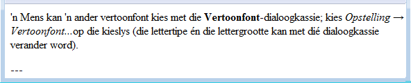

Ez az azonnali kezdéshez való útmutató csak a legelemibb ismereteket tárgyalja. Minden felhasználónak elolvasásra ajánljuk, mert megtudhatja belőle mindazt, amit az OmegaT az ő számára tartogat. Az itt leírt gyorsbillentyűket a "ctrl+billentyű" kombinációval, Mac esetén a "cmd+billentyű" kombinációval használhatja. A "cmd" billentyű az "alma"-jel az Apple klaviatúráján.
Az OmegaT képernyője három külön ablakra van felosztva. Ezek mindegyikét átméretezheti az egérrel. Balra található a szerkesztő, ahol begépeli a fordítást. Jobbra fent látható a Bizonytalan egyezések ablak, ahol a fordítási memóriában fellelt egyezések jelennek meg. Ez alatt található a Szójegyzék ablak, benne pedig a szójegyzékben fellelt egyezések.
A szerkesztőablakban az OmegaT a forrásszöveget jeleníti meg mondatokra (vagy bekezdésekre) 'darabolva'. Ezeket a szövegrészeket fogja egyiket a másik után fordítani. Ahogy halad a szöveggel, fordításai egy fordítási memóriába kerülnek. Ha minden szövegrészt lefordított (vagy ha úgy kívánja, még ezt megelőzően) az OmegaT a fordítási memória segítségével a “target” [célnyelvi] mappában előállítja a lefordított dokumentumo(ka)t.
Az OmegaT a fordítási feladatot ún. fordítási projektbe szervezi. A program minden projekthez létrehoz egy sor mappát. Ezekben tárolja a lefordítandó forrásszövegeket, az esetleg használni kívánt szójegyzékeket és fordítási memóriákat. Az OmegaT létrehoz egy “target” [célnyelvi] mappát is, amelybe a végleges lefordított dokumentumok kerülnek.
A menüből válassza ki a Projekt → Új pontot.
Térjen át arra a mappára, amelybe a projekt állományait menteni kívánja, majd adjon meg egy nevet a fordítási projektnek. A projekt fő mappája ezt a nevet fogja használni: minden projektfájl ebbe a mappába vagy annak almappáiba kerül majd.
Az OmegaT a létrehozandó projektmappák megerősítésére vagy módosítására az alábbi párbeszédablakot használja:
Elfogadhatja az almappák felkínált helyét, de előtte ellenőrizze, hogy a forrásnyelvi és a célnyelvi kódok helyesek-e. A lenyíló listából válassza ki a nyelvi kódot (2 betűs) vagy a nyelvi- és régiókódot (2 + 2 betűs), vagy írja be őket (a a nyelvi kód 2 vagy 3 betűs lehet). Jegyezze meg a 'target' almappa helyét (ahová a lefordított szövegek kerülnek majd). Ha "bekezdésenkénti" szövegdarabolás helyett mondatonkéntit szeretne használni, módosítsa a szövegdarabolási szabályokat.
Amikor a projekt beállításait a Rendben gombra kattintva jóváhagyja, az OmegaT felszólítja az importálandó forrásdokumentumok kiválasztására. Importálhat egyetlen állományt, de importálhat akár egész könyvtárakat (az alkönyvtáraikban lévő összes állománnyal együtt). Ha véletlenül rossz vagy túl sok dokumentumot importált, törölje őket a projekt 'source' [forrásnyelvi] mappájából (pl. egy fájlkezelővel).
A fordítandó állományok ellenőrzéséhez térjen át a Projektállományok ablakra (Menü: Projekt → Projektállományok..., ha a mappa nem nyílik ki automatikusan). Ha módosította a 'source' forrásmappa tartalmát, előbb ne feledje újból betölteni a projektet (Menü: Projekt → Újratöltés). Az OmegaT alaphelyzetben a projektben felsorolt állományok közül az elsőt nyitja meg. Az OmegaT csak az alábbi formátumú állományok fordítását támogatja, ha azok megfelelnek az állományszűrők között megadott mintáknak. Minden egyéb állományt figyelmen kívül hagy.
OpenDocument/OpenOffice.org
Egyszerű szöveg
.po
Bundle.properties Java
XHTML, HTML
HTML Help Compiler állományok
INI ('kulcs=érték' forma)
DocBook
Microsoft Open XML
Okapi egynyelvű XLIFF
QuarkXPress CopyFlowGold
Feliratok (SRT)
ResX
Android forrásfájlok
LaTeX
Ha meghatározta a projektet és a fordítandó állományokat, az OmegaT a szerkesztőben megnyitja az első forrásszöveget.
Az első szövegegység zöld színnel kiemelve látható; alatta a célnyelvi mezőben megismétlődik a forrásszöveg. (Ekkor a célnyelvi mezőn kívüli összes szöveg zárolva van és nem módosítható.) A <0001. egység> és az <egység vége> címkék közé kell beírnia a fordítást a forrásszöveg felülírásával. A következő szövegegységre az "ENTER" lenyomásával térhet át. Megjegyzés:
Bármely, akár feljebb, akár lejjebb lévő szövegrészre áttérhet, ha kétszer rákattint a megnyitni kívánt mondatra vagy bekezdésre.
- Ha inkább üres célnyelvi mezőbe szeretné beírni a fordítást, módosítsa ennek megfelelően a Beállítások → Szerkesztési mód... beállítását.
A főmenü Nézet menüpontjából módosíthatja a szerkesztőablak beállításait (pl. azt, hogy látsszon-e a forrásnyelvi szöveg, hogyan jelenjen meg a lefordított szöveg stb.).
Az "ENTER" megnyomásakor több dolog történik a háttérben: az OmegaT a szövegegységpárt (a forrást és annak fordítását) hozzáadja a fordítási memóriához és automatikusan lefordítja az összes ezzel egyező, de más projektfájlokban fellelt szöveget. Ezen túl végignézi a fordítási memóriát és a szójegyzéket, nincs-e bennük egyezés a következő lefordítatlan szövegegységgel.
Ha az OmegaT a fordítási memóriában bizonytalan (30% vagy azt meghaladó mértékű) egyezést talál a következő szövegegységhez, akkor megjeleníti azokat a Bizonytalan egyezések ablakban. Alaphelyzetben a Bizonytalan egyezések ablakból az első egyezést választja ki.

Ha egy memóriabeli egyezést a célnyelvi mezőbe kíván beszúrni, használhatja az alábbi gyorsbillentyűket:
A Ctrl+I lenyomásával a kiválasztott egyezést beszúrja a kurzor helyére, illetve...
A Ctrl+R lenyomásával a kiválasztott egyezéssel felülírja a teljes szövegdarabot.
Ha több egyezés is szerepel és Ön nem az előre kiválasztottat kívánja használni:
Válassza ki a kívánt egyezést az Egyezések ablakból: Ctrl+2 a második egyezés, Ctrl+3 a harmadik egyezés kiválasztásához stb.
Ezután használhatja a Ctrl+I vagy a Ctrl+R gyorsbillentyűket a fent leírtak szerint.
(Arra is utasíthatja az OmegaT-t, hogy bármely megadott százalék fölötti egyezést automatikusan szúrjon be a célnyelvi mezőbe, ha a szövegdarab megnyílik. Ezt a lehetőséget a Beállítások → Szerkesztési mód... pontban állíthatja be.)
A projektbe felvett szójegyzékekben és szótárakban fellelhető egyezéseket tájékozódás céljából a Szójegyzék és a Szótár panel jeleníti meg.
Az OmegaT kiterjedt keresési lehetőségeket biztosít. A Szöveg keresése ablakot hívja elő a Ctrl+F-fel és a "Keresendő" mezőbe írja be a kikeresendő szót vagy kifejezést. Másik megoldásként jelölje ki a szerkesztőpaneln a keresendő szót vagy kifejezést, majd használja a Ctrl+F billentyűkombinációt. A kijelölt szó vagy kifejezés ekkor automatikusan belekerül a "Keresendő" mezőbe.
Ctrl+M billentyűkombinációt.
Ha minden szövegrészt lefordított (vagy akár már előtte), az OmegaT frissíti a céldokumentumo(ka)t a fordítási memóriában tárolt fordítások alapján. Ehhez a menüsorról válassza ki a Projekt → Lefordított állományok előállítása pontot. Az OmegaT előállítja a projekt forrásmappájában lévő összes állomány fordítását, akár teljesen elkészültek, akár nem. A teljesen vagy részben kész állományokat a projekt célmappájába (target) menti. A fordítás befejezéséhez nyissa meg a célnyelvi szövegeket a velük használatos alkalmazásban (böngészőben, szövegszerkesztőben...), majd ellenőrizze a fordítás tartalmát és szerkesztését. Ezután visszatérhet az OmegaT-hez és elvégezheti a szükséges javításokat; ne feledkezzen el a lefordított szövegek végleges előállításáról.
Az OmegaT speciális címkék használatával gondoskodik arról, hogy a forrásszövegek formázása (vastag, dőlt stb.) megőrződjék. Az OmegaT címkéi egy vagy több betűből és egy vagy több azt követő számjegyből, esetenként a "/" karakterből állnak (például: <f0>, </f0> <br>, </s2>). Ezekre ügyelnie kell és a megfelelő helyre kell őket a célnyelvi szövegbe beszúrnia (lásd a Címkeműveletek) c. részt.
Ezekben a példákban a címkék ki vannak emelve a könnyebbség kedvéért, az OmegaT-ben ezek nem kiemelten jelennek meg. A kék HTML-címkéket az OmegaT figyelmen kívül hagyja, mivel ezek teljesen körbeveszik az adott egységet. Az alább zöld színnel kiemelt címkéket az OmegaT-nek kezelnie kell, mert azok az egységen belül helyezkednek el. Íme egy példa egy HTML-állományban szereplő címkére:
<p>Egy másik megjelenítési betűtípust választhat a <b>Betű...</b> párbeszédablakból. Megnyitása a <i>Beállítások </i> → <i>Betű...</i> menüpontból lehetséges. A párbeszédablakban beállíthatja a betű típusát és méretét.</p>
Ezt az OmegaT az alábbi módon jeleníti meg afrikaans fordítás esetén:

Amikor az OmegaT előállította a fordítást, a HTML ekként néz ki:

Az OmegaT nem ellenőrzi automatikusan a lefordított dokumentumban lévő hibás címkéket. A szöveg leadása előtt Önnek kell ellenőriznie a címkék helyességét. Válassza ki a menüből az Eszközök→ Címkék ellenőrzése pontot. Ekkor egy táblázat jelenik meg, amelyben látható, hol nem egyeznek a forrásnyelvi és célnyelvi címkék. Kattintson a szövegegység számára. Ennek hatására automatikusan a szerkesztőben a hibás szövegegységhez kerül, ahol kijavíthatja a hibás címkét. A kijavított egység ellenőrzéséhez nyomja meg az Enter-t, majd ellenőrizze véglegesen a Control-T újbóli megnyomásával.
Egyes esetekben címkehiba miatt nem lehet a dokumentumot megnyitni. Ezért mindig javítsa ki a hibás címkéket, mielőtt előállítja a lefordított állományokat. Végezetül nyissa meg a böngészőben vagy a szerkesztőben a lefordított szöveget és ellenőrizze a végső formázást.
Egyes programozási nyelvekben (pl. PHP, C) speciális címkéket használnak helyőrzőként a printf függvénnyel kombinálva. Ha bekapcsolja ezt a funkciót, az OmegaT felderíti és ellenőrzi a címkéket. A menüből válassza ki a Beállítások→ Címkeellenőrzés... pontot. Választhat egyszerű és átfogó ellenőrzés közül. Egyszerű ellenőrzés esetén a rendszer a lehetséges helyőrzők értékeinek csak az egyszerűbb változatait használja. Ez akkor jön kapóra, amikor a forráskódban nincsenek bonyolultabb helyőrzők, az eredményben pedig sok a téves találat.
| Jogi tudnivalók | Kezdőoldal | Tartalomjegyzék |